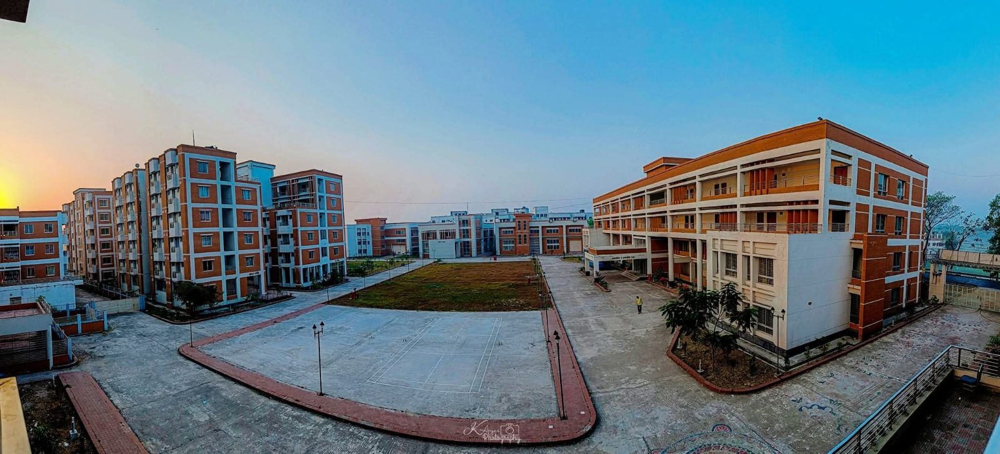

59৫৯
Institutionsপ্রতিষ্ঠান
- Textile Engineering Collegesটেক্সটাইল ইঞ্জিনিয়ারিং কলেজ
- 8৮
- Textile Institutesটেক্সটাইল ইনস্টিটিউট
- 10১০
- Textile Vocational Institutesটেক্সটাইল ভোকেশনাল ইনস্টিটিউট
- 41৪১